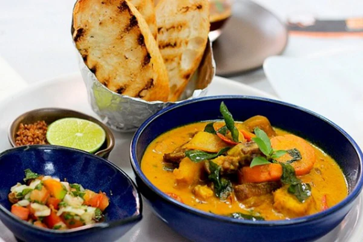
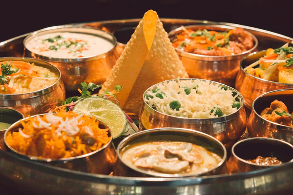
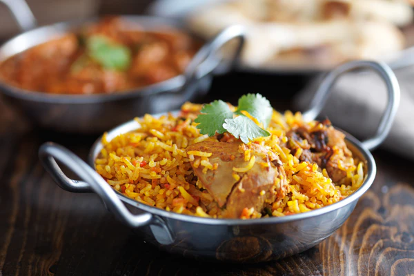
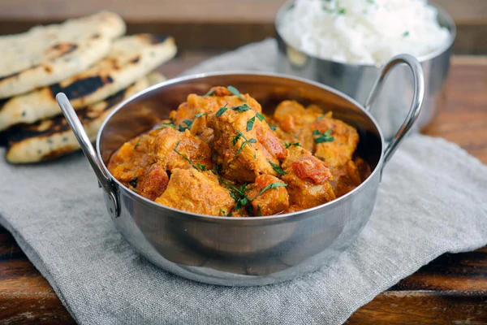

The Diverse Flavors of Indian Cuisine
When it comes to delicious dishes, everyone will immediately think
of India. Indian cuisine is also extremely rich, making it
impossible for first-timers to resist the attraction of delicious
dishes here. As everyone knows, Indian dishes are not only diverse
in ingredients, but also in seasoning, which is very much focused on
by the chef. Indian culinary culture always brings a distinct color
that you are hard to find in other places, the dishes here will make
every visitor feel surprised and interesting. Let's explore the
Indian culinary culture as well as the typical traditional dishes
that must be tried once in your India trip right here!

1.Món cà ri trứ danh
Gà Makhani hay còn được biết với tên gọi bơ gà là món ăn lạ miệng
và rất được ưa chuộng ở Ấn Độ. Món này khi nấu lên có thịt gà mềm,
nấu trong nước sốt cà chua cay. Theo truyền thống, món gà này có
thể được nấu trong một tandoor ( một lò đất sét hoặc kim loại hình
trụ), nướng, chiên,…tùy theo ý thích của mỗi người. Nước sốt đúng
chuẩn của nó được làm bằng cách nấu cà chua, tỏi và thảo quả tươi
thành bột màu đỏ. Hỗn hợp bột này sẽ được xay nhuyễn sau khi làm
mát. Sau đó, đầu bếp thêm bơ, các loại gia vị khác nhau và sữa
nguyên chất khô thêm vào món ăn cho hoàn chỉnh.

2 Thali - món ăn của mọi gia đình
Món Thali là một món ăn truyền thống từ thuở xa xưa trên các bàn
ăn gia đình của người Ấn. Bạn có thể dễ dàng tìm và thưởng thức
món ăn này từ những nhà hàng sang trọng cho đến các quán ăn bình
dân. Thali là một món ăn hỗn hợp bao gồm cơm, bánh mì Naan, cà ri
đậu, khoai tây, sữa chua không đường và có thể kết hợp với những
nguyên liệu khác để tăng thêm hương vị cho món ăn. Những món ăn
này được đặt chung trên một chiếc khay với tất cả nguyên liệu và
được bày trí đẹp mắt.

3. Cơm Biryani - bữa cơm sum họp gia đình
Người Ấn thường thưởng thức món cơm Biryani trong những bữa cơm
sum họp gia đình và sau những buổi chiều cầu nguyện ở nhà thờ Hồi
giáo. Món cơm biryani thường được dùng ăn kèm cùng với nhiều loại
thịt với nhiều loại rau khác nhau. Thành phần chính góp phần tạo
nên sức hấp dẫn của món ăn chính là gạo basmati, loại gạo này chỉ
có ở Ấn Độ. Khi nấu, gạo có độ dẻo thích hợp và một màu trắng đẹp
mắt. Quá trình chế biến món ăn này khá phức tạp cho nên món ăn sau
khi hoàn thành mang đến một hương vị thơm ngon, hấp dẫn cho người
dùng.

4 Gà Tikka - món ăn truyền thống người Ấn
Gà tikka là món ăn truyền thống của người Ấn đem đến cảm giác khá
nhẹ nhàng và nồng ấm trong những bữa cơm gia đình. Món này thường
được dùng kèm với bánh mì naan để tăng thêm hương vị. Món ăn này
được chế biến từ gà ướp với bột tikka masala và đa số người Ấn đều
thích ăn cay nên tại một số vùng người ta đều ướp thêm một số gia
vị khác như bột ớt, bột gừng. Phần nước sốt được làm từ kem, gia
vị cay và bột màu cam từ cà chua mang đến hương vị độc đáo cho món
gà tikka.
